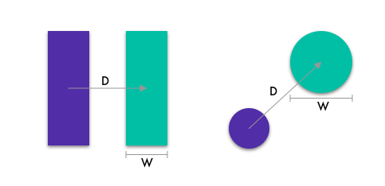
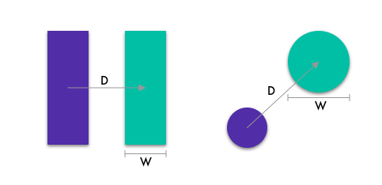

Introduction
Fitts' law (Fitts's Law) is one of the most well-studied principles in the field of Human-computer Interaction. The law gives a relation for the movement time to point (MT) at a target of given size (W) in a given distance (D).
 

MT is the movement time
ID is based on the specific task (e.g., moving from one position to another)
a is the empirically determined constants for a particular pointing technique
b is the empirically determined slope or rate of change for a particular pointing technique
D(or A, amplitude) is the distance to the target
W is the width of the target
log(x) determines the power value needed to raise 2 to equal x
It is a common sense that it takes more time to hit a target if the target is smaller or further away. However, within a limited space, such as a computer or mobile phone screen, it is necessary to find a good balance in terms of target size and distance.
Fitts’s law also tells a linear relationship between task difficulty (ID) and movement time (MT), which inspires User Interface designers to make a tradeoff between speed and accuracy when designing a pointing task.
A Pointing Task
Let's simulate a pointing task. First, select the width and distance for a target. Then, click the "START TRIAL" button to get started. The time consumed to complete each pointing task will be displayed underneath.
For each trial, click on the green target. Perform as fast and as accurately as you can.
What does Fitts's Law tell us?
The plots below show how do a target size and distance affect the pointing task difficulty. The third scatter plot specifies a linear correlation of movement time to the index of difficulty. You can hover over each circle to see detailed information.
The open-access dataset is provided by scholars from UC Berkeley and UC San Francisco (Ken Goldberg, et al). Specifically, the data used here is collected from controlled experiments. In the experiments, the target distance (D) and width (W) vary (heterogeneous) between targets.
Distance vs. Index of Difficulty
Width vs. Index of Difficulty
Index of Difficulty vs. Movement Time
Fitts's Law states a linear relationship between task difficulty and movement time.
References
1. Fitts, P. M. (1954). The information capacity of the human motor system in controlling the amplitude of movement. Journal of Experimental Psychology, 47(6), 381-391. doi:10.1037/h0055392
2. Ken Goldberg, Siamak Faridani and Ron Alterovitz. (2013). Two Large Open-Access Datasets for Fitts’ Law of Human Motion and a Succinct Derivation of the Square-Root Variant. http://automation.berkeley.edu/fitts-dataset/fitts-paper.pdf
3. MacKenzie, I. S. (2018). Fitts' law. In K. L. Norman & J. Kirakowski (Eds.), Handbook of human-computer interaction, pp. 349-370. Hoboken, NJ: Wiley. doi:10.1002/9781118976005 2
4. Simon Wallner, Otilia Danet, Trine Eilersen, and Jesper Tved. (2012). An Interactive Visualisation of Fitts's Law with JavaScript and D3. http://simonwallner.at/ext/fitts/